WES Ricoh - Installer le WES manuellement
Principe
Dans le cas où l'installation du WES à l'aide de l'exécutable WESRicohDeployer.jar échoue, vous pouvez installer le WES manuellement grâce à la procédure décrite ci-après.
L'installation manuelle comporte les étapes suivantes :
-
activation de la communication SSL/TSL ;
-
installation du WES depuis l'interface Ricoh ;
-
configuration de l'authentification administrateur.
Accéder à l'interface d'administration du périphérique
N.B. : avant d'installer un WES, vérifiez qu'il n'existe pas déjà ou désinstallez le précédent WES avant d'installer le nouveau.
L'installation manuelle du WES est effectuée à partir de Web Image Monitor, le site web d'administration du périphérique Ricoh. Vous pouvez y accéder de deux manières différentes :
-
en saisissant directement l'adresse du site web dans un navigateur ;
-
par le biais du site web d'administration Watchdoc.
Pour accéder à Web Image Monitor par le biais de Watchdoc :
-
dans l'interface d'administration de Watchdoc depuis le Menu Principal, dans la section Exploitation, cliquez sur Files d'impression ;
-
dans la liste des files d'impression, cliquez sur la file Ricoh sur laquelle vous souhaitez installer le WES :
-
Dans l'interface de configuration de la file, sous l'onglet Etat, dans la section Monitoring, cliquez sur l'adresse IP du périphérique :
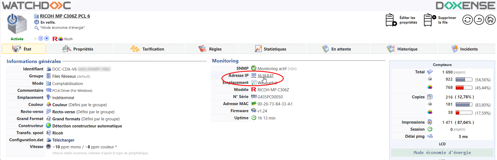
-
vous accédez à Web Image Monitor, le site web d'administration du périphérique Ricoh®.
-
Authentifiez-vous en tant qu'administrateur :
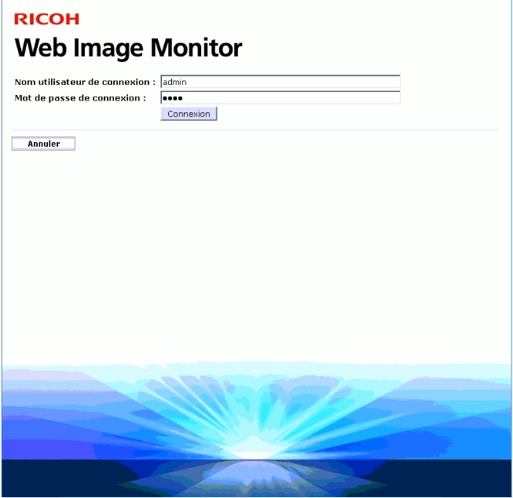
Activer la communication SSL / TLS
Pour permettre les échanges entre le périphérique et le WES, il est tout d'abord nécessaire d'activer la communication SSL/TLS :
-
depuis l'interface d'administration, rendez-vous dans l'interface Gestion de périphérique > Configuration ;
-
dans la section Sécurité cliquez sur SSL/TLS :
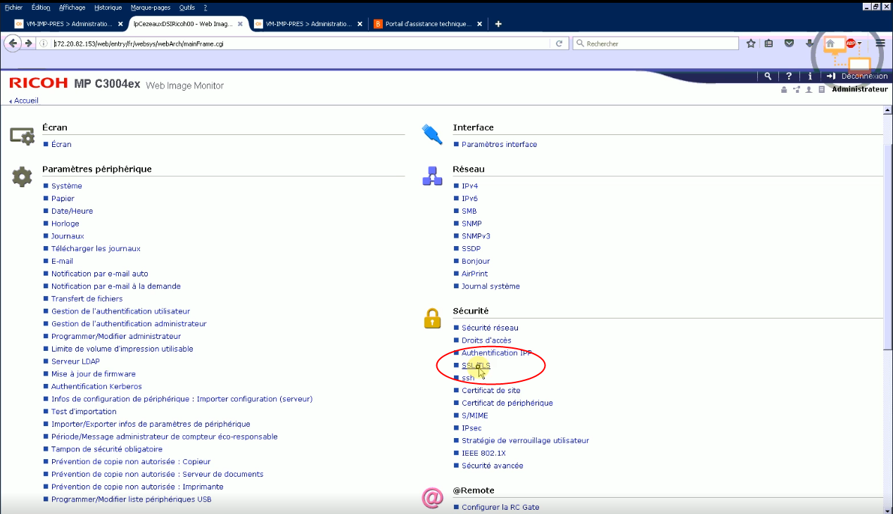
-
dans l'interface SSL/TLS, vérifiez :
-
que le paramètre IPv4 est activé ;
-
que le certificat SSL est installé.
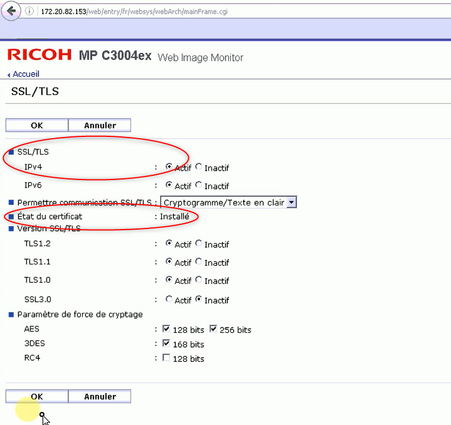
-
pour les périphériques de génération 2.5, vérifiez que tous les boutons-radio de cette section sont activés :
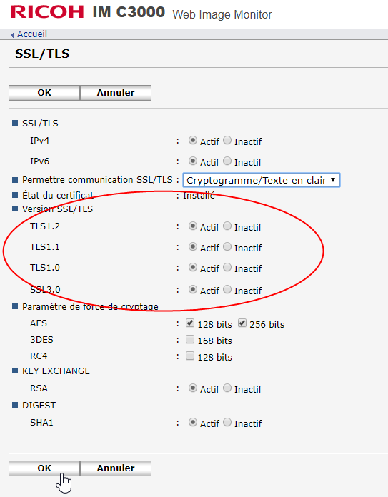
-
-
cliquez sur le bouton OK pour valider le paramétrage.
Installer le WES depuis l'interface Ricoh®
Accéder à l'interface
-
depuis l'interface de Configuration, dans la section Paramètres Fonctions avancées, cliquez sur Installer ;
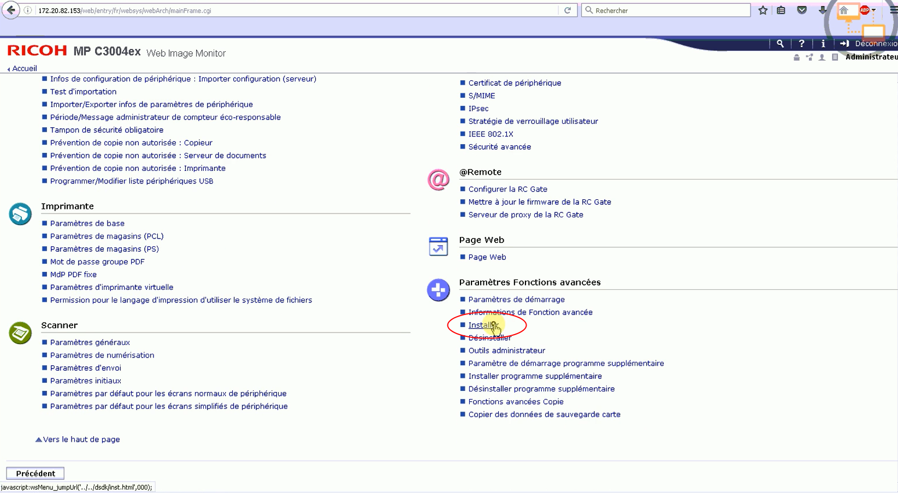
-
dans l'interface Installer, cliquez sur le bouton radio Fichier local, puis cliquez sur Parcourir ;
-
dans la fenêtre de sélection, parcourez votre environnement de travail pour sélectionner le fichier d'installation du WES Ricoh dans ...\Programmes\Doxense\Watchdoc\Redist par défaut) :
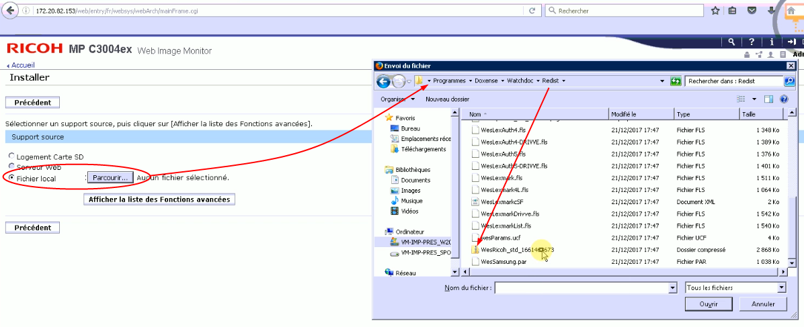
-
une fois le fichier sélectionné, cliquez sur le bouton Afficher la liste des fonctions avancées (N.B. : l'affichage peut durer plusieurs secondes) ;
ède nouvelles sections de configuration s'affichent dans l'interface.
Installer l'authentification
-
Dans l'interface Installer, dans la section Configuration Type-J, cochez le bouton radio ON pour activer le Démarrage auto ;
-
dans la section Liste des fonctionnalités avancées, cochez le bouton radio Watchdoc Authentication, puis cliquez sur Installer ;
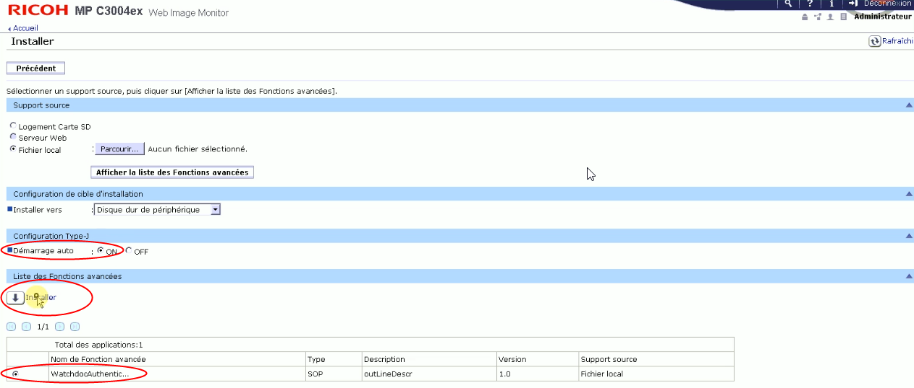
-
dans la fenêtre Confirmer, cliquez sur le bouton OK :
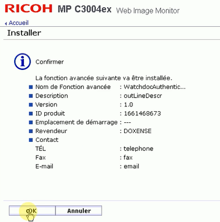
èun message de confirmation vous informe que l'installation de la fonction avancée WatchdocAuthentication est en cours ;
l'interface Installer s'affiche de nouveau.
Installer le servlet
-
Dans l'interface Installer, cliquez de nouveau sur le bouton radio Fichier local puis cliquez sur Parcourir ;
![dans la fenêtre de sélection, parcourez votre environnement de travail pour sélectionner le dossier compressé ServletsRicoh_std_[...] (dans ...\Programmes\Doxense\Watchdoc\Redist par défaut) :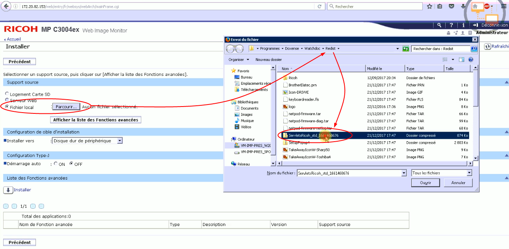](WESRicoh_Manuelle_InstallWDAuthentl.png){kind=link}
-
une fois le fichier sélectionné, cliquez sur le bouton Afficher la liste des fonctions avancées ;
-
dans la section Liste des fonctionnalités avancées, cochez le bouton radio WatchdocWebAppInstallation puis cliquez sur Installer ;
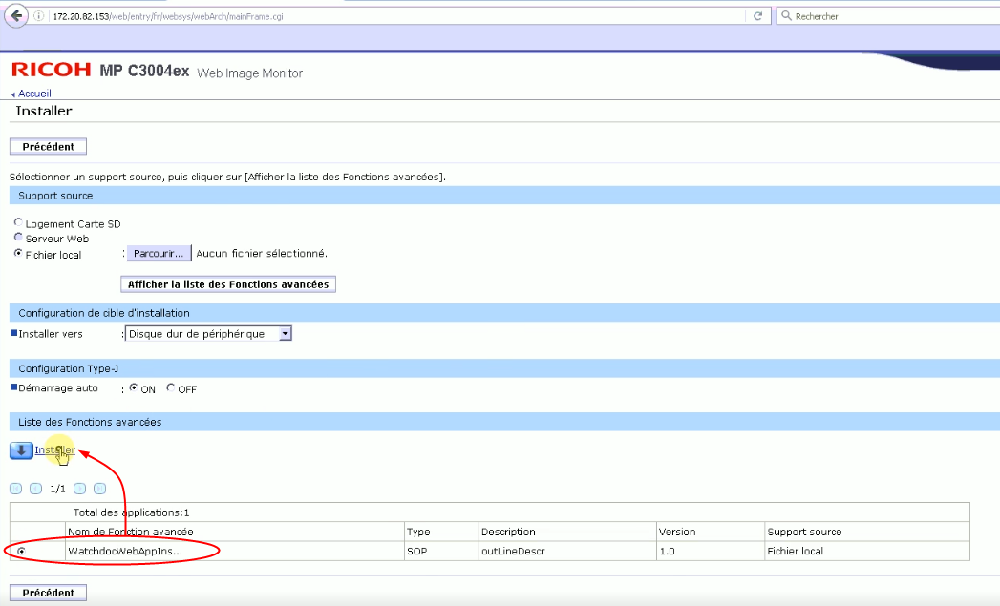
-
dans la fenêtre Confirmer, cliquez sur le bouton OK :
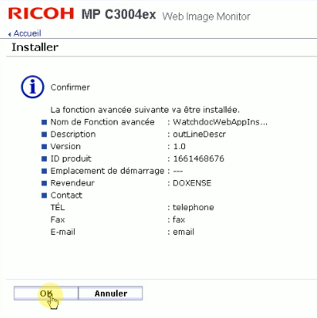
Un message de confirmation vous informe que l'installation de la fonction avancée WatchdocWebAppInstallation est en cours.
-
cliquez sur OK pour confirmer l'installation.
Vous revenez ensuite dans l'interface Installer.
-
Dans l'interface Installer, cliquez sur le bouton Précédent pour revenir à l'interface de configuration générale.
Configurer l'authentification administrateur
-
Dans l'interface Gestion de périphérique > Configuration, section Paramètres du périphérique, cliquez sur Gestion de l'authentification administrateur :
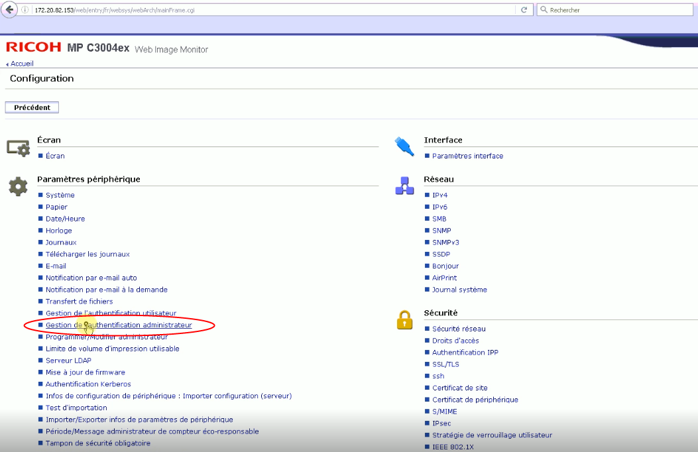
-
Dans l'interface Gestion de l'authentification administrateur, cochez les boutons radio ON pour activer :
-
l'authentification administrateur utilisateurs ;
-
les outils administrateur ;
-
l'authentification administrateur machine ;
-
tous les paramètres disponibles pour l'administrateur machine ;
-
l'authentification administrateur réseau ;
-
tous les paramètres disponibles pour l'administrateur réseau ;
-
l'authentification administrateur fichiers ;
-
tous les paramètres disponibles pour l'administrateur fichier.
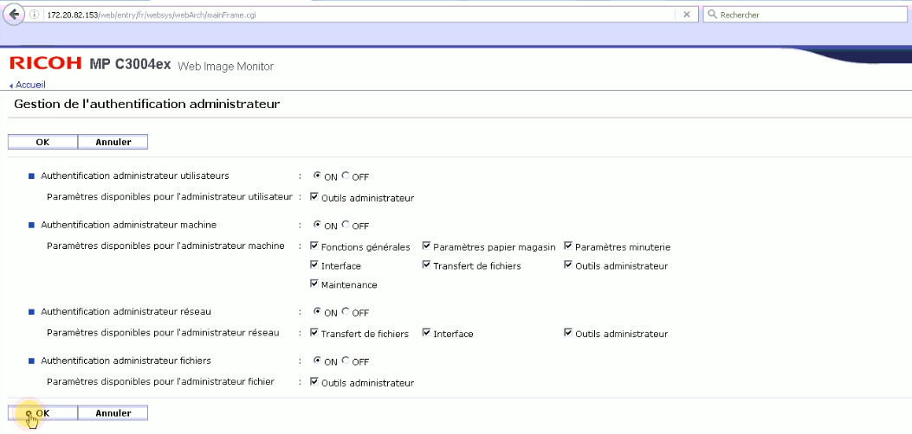
-
{kind=link}
-
cliquez sur OK pour valider le paramétrage ;
èvous revenez dans l'interface de configuration générale.
Configurer l'authentification Utilisateur
-
Depuis l'interface de configuration générale, cliquez sur Gestion de l'authentification utilisateur ;
-
pour le paramètre Gestion de l'authentification utilisateur, sélectionnez Authentification personnalisée dans la liste ;
N.B. : si le type de gestion "Authentification personnalisée" n'apparaît pas dans la liste, c'est que les SP modes ne sont pas correctement configurés sur le périphérique (cf. Configurer les SP modes).
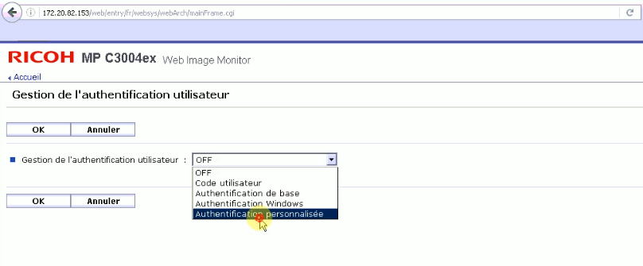
-
cliquez sur OK pour valider votre choix ;
-
dans la section Paramètres d'authentification de travail imprimante qui s'affiche, pour le paramètre Authentification travail imprimante, choisissez Entier ;
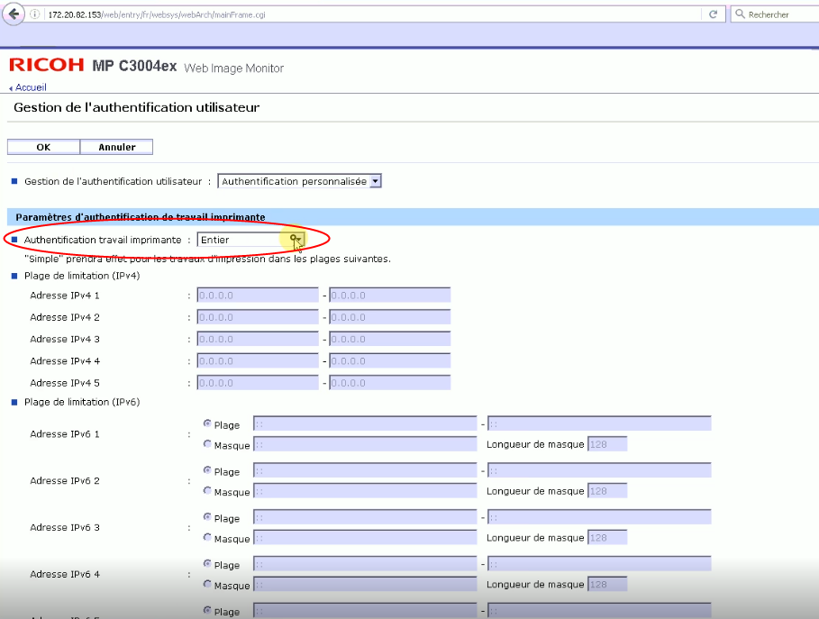
{kind=link}
-
conservez les autres paramètres par défaut puis cliquez sur le bouton OK pour valider la configuration.
Vous revenez ensuite dans l'interface de configuration générale.
Réinitialiser le périphérique
Au terme de ce paramétrage, il est nécessaire de réinitialiser le périphérique :
-
depuis l'interface Web Image Monitor > Configuration, cliquez sur le bouton Précédent ;
{kind=link}
-
dans l'interface Réinitialiser l'appareil, cliquez sur OK pour confirmer le redémarrage :
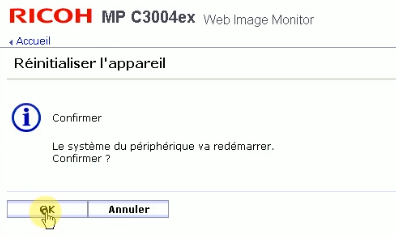
Un message vous informe que le périphérique est inaccessible durant le redémarrage et vous invite à patienter.
Vérifier l'état du périphérique
Vous pouvez vérifier l'état du périphérique grâce au simulateur d'écran. Pour accéder au simulateur :
-
depuis l'interface d'administration du périphérique Web Image Monitor, cliquez sur le menu Gestion de périphérique>Gestion d'écran ;
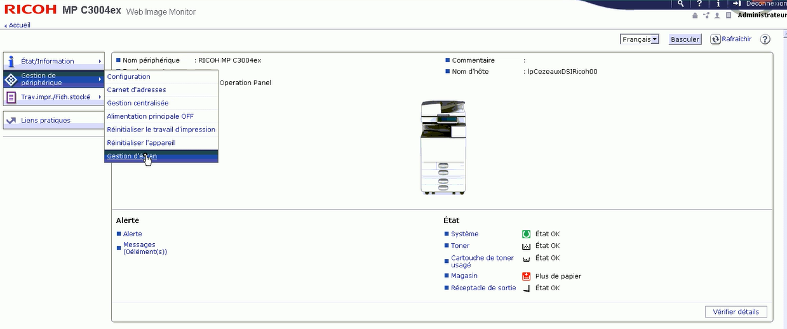
{kind=link}
-
dans l'interface Gestion d'écran, l'écran du périphérique s'affiche. Lorsque le redémarrage du périphérique est terminé, le message affiché est "La modification des paramètres est terminée" :
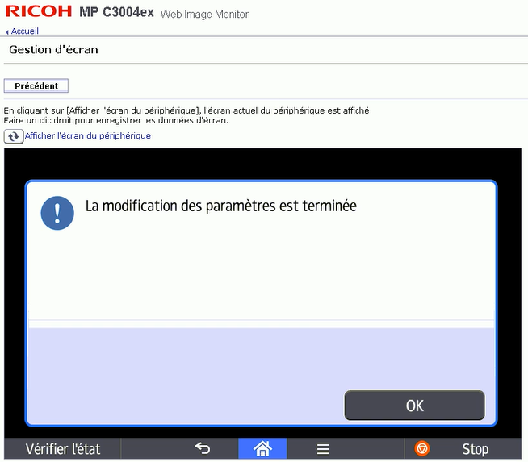
-
Cliquez sur le lien Afficher l'écran du périphérique pour le mettre à jour :
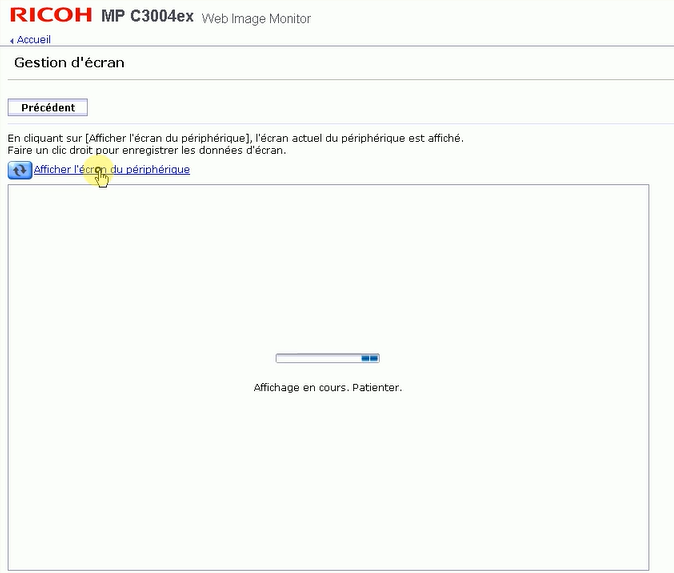
Un message vous informe que l'installation poursuit son cours et attend une configuration valide :
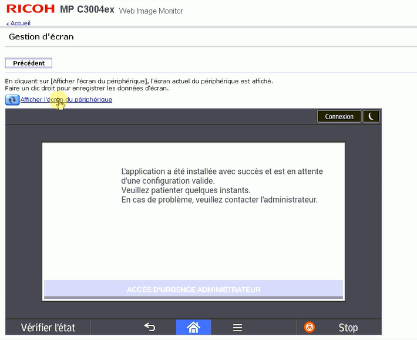
-
Cliquez de nouveau sur le lien Afficher l'écran du périphérique pour le mettre à jour.
-
Retournerz dans l'interface de configuration de Watchdoc pour procéder à l'installation du WES.